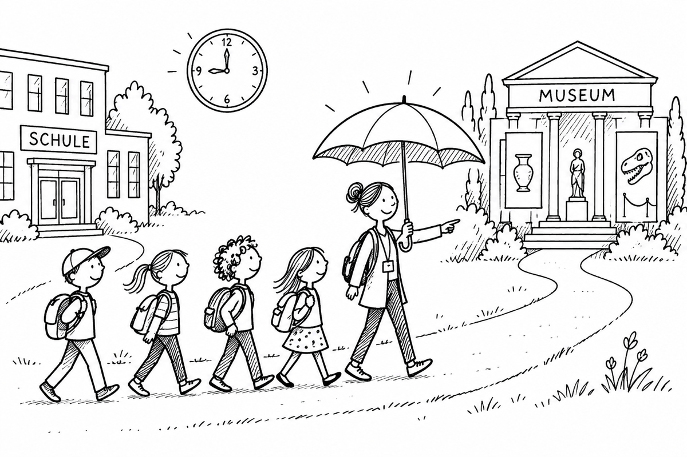

Exkursion und Unterrichtszeit
Zusatzfrage aus der Zusammenfassung.

Eine Exkursion kann eine Form von Unterricht außerhalb des Klassenraums sein. § 4 APO-S I erlaubt Erkundungen, Schulfahrten und ähnliche Veranstaltungen zeitlich begrenzt anstelle des Unterrichts nach Stundentafel. Daraus folgt keine starre Begrenzung auf die sonstigen Stunden des betreffenden Tages.
Teilnahme, Aufsicht und Versicherung sind gesondert zu planen. § 43 Abs. 5 SchulG nennt den gesetzlichen Unfallversicherungsschutz bei schulischen Veranstaltungen und auf den Wegen. Eine konkrete Entscheidung über Dauer, Genehmigung, Elterninformation und Dienstzeitfragen lässt sich daraus allein nicht ableiten.
Für die Planung: schulisches Fahrtenkonzept und einschlägige Erlasse prüfen, die Schulleitung beteiligen und Ende sowie Rückweg klar kommunizieren.
Seminarunterlagen: Zusammenfassung · Aufgabenfolien
Drei Fragen zu Beispielen
Klicke eine Karte an und vergleiche deinen Ansatz mit der Musterantwort.